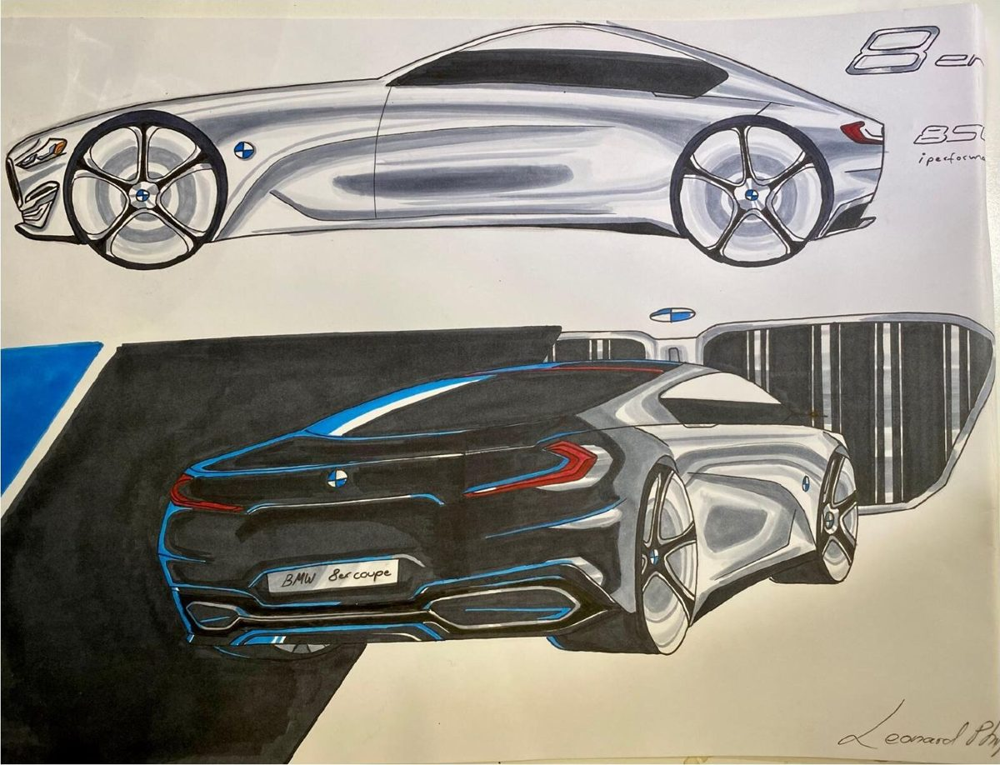
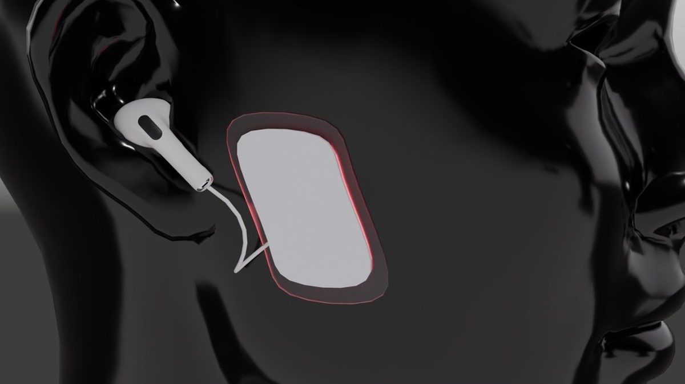
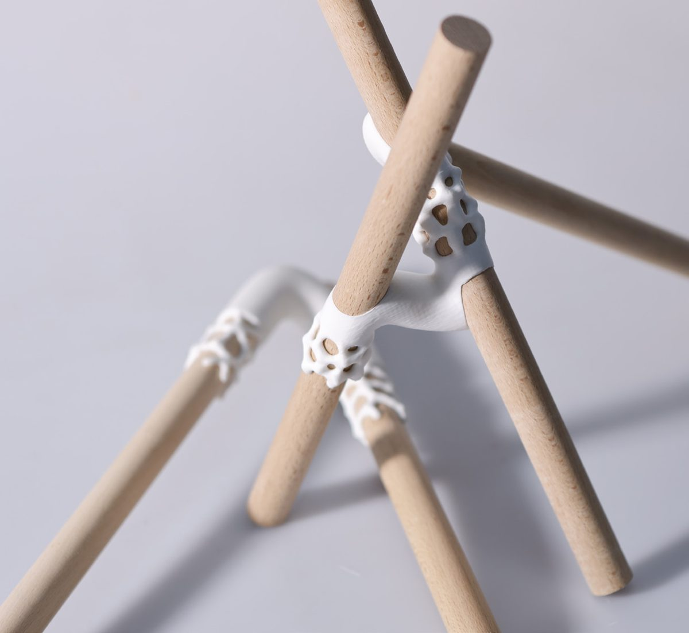
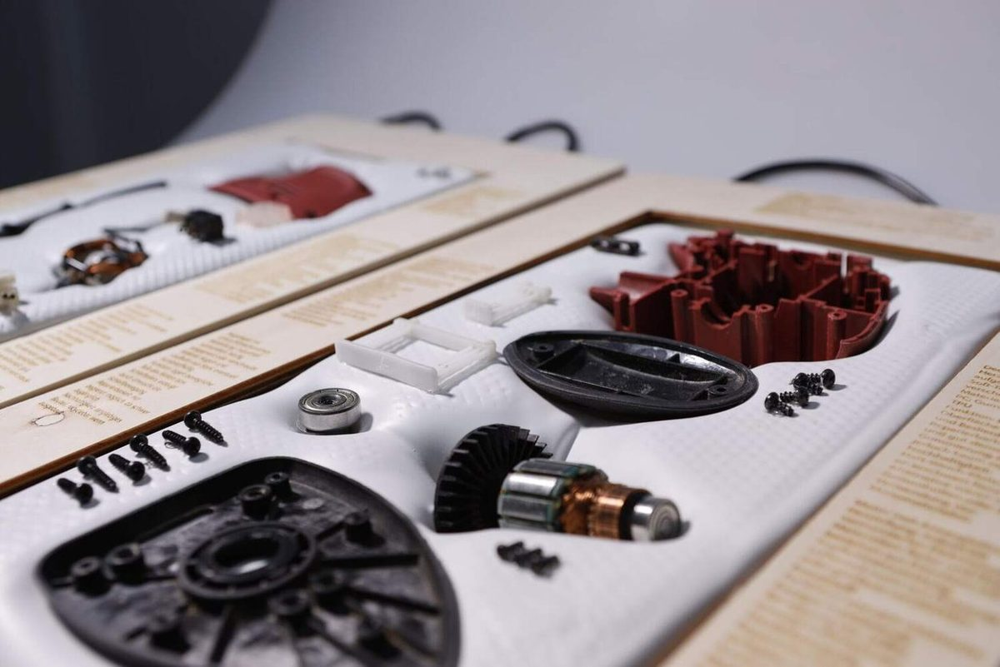

01 / Selected work
Selected work.


SCORP.ION
Electric moped powered by the tram line

Steel Vehicle
Gravity racer from steel only · SFSU

Tableware for Construction Workers
User-centred product design · SFSU

Hybrid Yoga Box
Cork, wood & sound · Product design

BRUSH_D
Modular dish brush · Product design

Nilu 27 & Sketch Gallery
Full-scale tape rendering & car sketches
Further explorations
Other projects.

Yellow Superpress
Lemon press for bars · Product design

Masseo
Bruxism add-on for in-ears · Charité

Perfect Connections
Organic joint for beech rods · Computational design

Product Analysis: Detail Sander
Repairability analysis · Sustainable Design 2
02 / About
About.

I study Industrial Design at HTW Berlin and come to design from a business background, which shapes how I think about products: who uses them, how they are made and how they are sold.
Work on Mercedes-Benz campaigns and a summer on the factory floor in Stuttgart sparked my interest in vehicles. Today I design both: mobility concepts and everyday products, and I work from first sketch and tape rendering through CAD to welded, working prototypes, never forgetting costs, planning and realisation.
Education
- Since 10/2024
 B.A. Industrial DesignHTW BerlinFrom sketch and model to CAD and rendering
B.A. Industrial DesignHTW BerlinFrom sketch and model to CAD and rendering - 2024
 MBA studies, one semesterBSP Business School Berlin
MBA studies, one semesterBSP Business School Berlin - Fall 2022
 Semester abroadSan Francisco State University, USAProduct Design, International Marketing
Semester abroadSan Francisco State University, USAProduct Design, International Marketing - 10/2020 – 03/2024B.Sc. International Business AdministrationBSP Business School Hamburg
Experience
- 04/2024 – 03/2026
 Working student, content managementantoni, Berlin, for Mercedes-BenzWeb content for Mercedes-Benz HQ
Working student, content managementantoni, Berlin, for Mercedes-BenzWeb content for Mercedes-Benz HQ - 07 – 08/2023
 Summer jobMercedes-Benz factory, StuttgartVehicle series production
Summer jobMercedes-Benz factory, StuttgartVehicle series production - 03 – 05/2023
 Marketing & branding internKaufmeinticket, Amsterdam
Marketing & branding internKaufmeinticket, Amsterdam - 07 – 09/2021
 Marketing internW&Z FinTech GmbH (Warburg Bank), HamburgMarketing support for a Warburg Bank fintech
Marketing internW&Z FinTech GmbH (Warburg Bank), HamburgMarketing support for a Warburg Bank fintech - 09/2018
 InternIADC International Airport Design Consulting, Hamburg
InternIADC International Airport Design Consulting, Hamburg
International
- 09/2024
 Certificate in International Business and TradeGreystone College, Vancouver, CanadaLeadership Award for contribution and role-model behaviour
Certificate in International Business and TradeGreystone College, Vancouver, CanadaLeadership Award for contribution and role-model behaviour - Summer 2019
 Academic and Career Preparation CourseTrinity College, University of Toronto, CanadaCarl Duisberg Foundation
Academic and Career Preparation CourseTrinity College, University of Toronto, CanadaCarl Duisberg Foundation - 2019Europe exchange programWarsaw, Poland
Skills
 Rhino
Rhino Blender
Blender Autodesk Fusion
Autodesk Fusion Photoshop
Photoshop Illustrator
Illustrator InDesign
InDesign Procreate
Procreate


03 / Newsletter
Automotive
Design Briefing
Once a week, I send out a short briefing on automotive design: new concepts, production cars and design studies, explained from a designer's point of view. Quick to read, free, and you can unsubscribe anytime.
04 / Contact
Let's build
something.

- Instagram@advanced_transportdesign ↗
- LinkedInLeonard Philp ↗
- Behanceleonardphilp ↗
- Based inBerlin, Germany